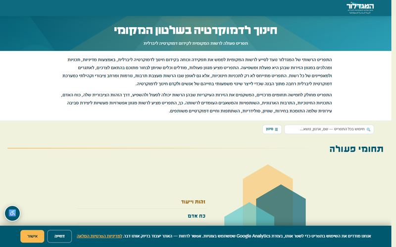
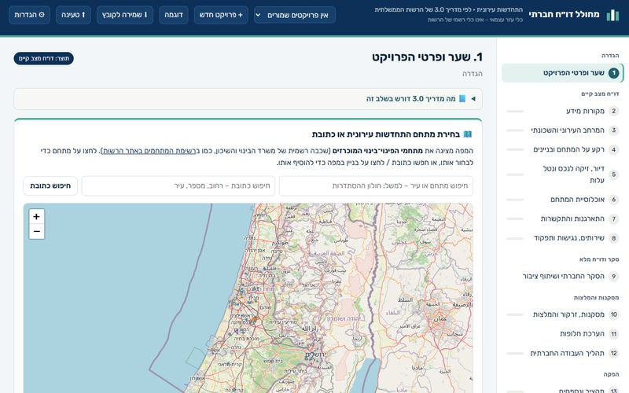

עבודות נבחרות
אתרים וכלים שכבר באוויר.

אתר
תפריט המגדלור לרשויות מקומיות
תפריט של כלים, הכשרות ותוכניות לחיזוק הדמוקרטיה ברשות המקומית, לפי תחומי פעולה.
לאתר ←
אתר
בית נופש באי אוויה
עברית ואנגלית, יומן תפוסה שמתעדכן לבד, ומפת המלצות.
לאתר ←
כלי
מחולל דו"ח חברתי להתחדשות עירונית
ממלאים שלב אחרי שלב לפי מדריך 3.0 של הרשות להתחדשות עירונית, ומקבלים דו"ח. כלי עזר עצמאי.
לכלי ←